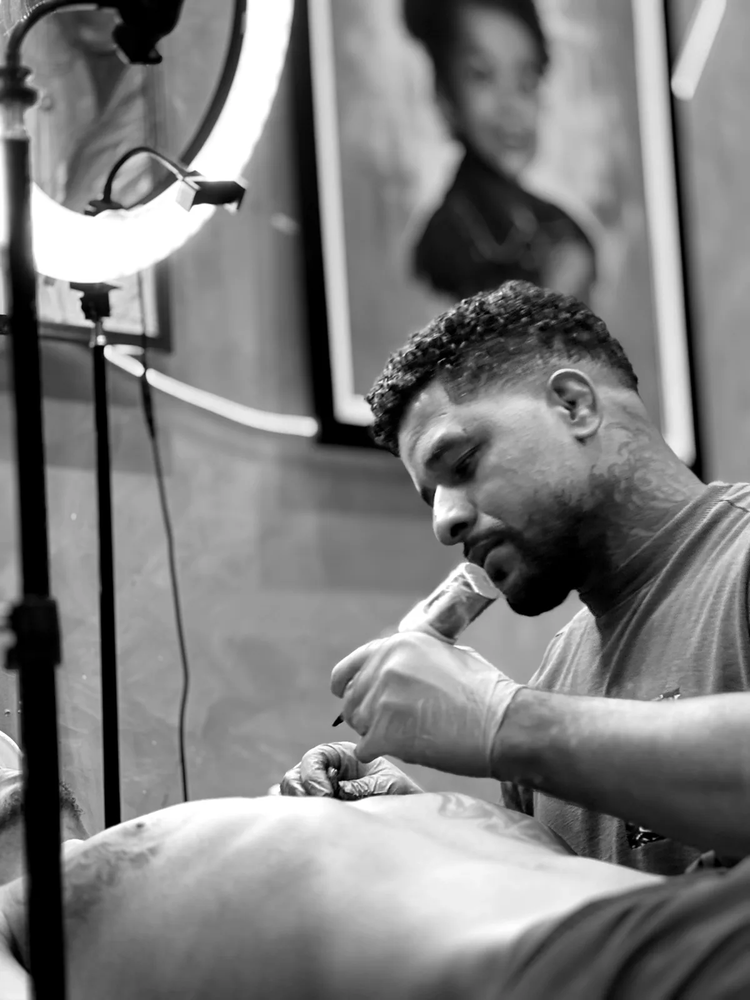

Cuidados depois da tatuagem
A sessão é metade do trabalho. A outra metade é a cicatrização, e ela é sua. Este é o mesmo texto que eu mando para cada cliente depois da sessão. Está aqui para você ler antes de marcar, e para consultar depois.
O essencial
Siga estes oito itens e a sua tattoo cicatriza bem.
- Lave a tatuagem delicadamente com água e sabonete neutro, sem esfregar.
- Seque com papel-toalha, dando leves batidinhas.
- Aplique uma camada fina de Cicaplast 2 a 3 vezes ao dia, ou conforme orientação.
- Não coce, não arranque casquinhas e evite ficar tocando na tatuagem.
- Evite sol, piscina, mar, sauna e atividades que causem muito atrito ou suor excessivo durante a cicatrização.
- Use roupas limpas e folgadas sobre a região, evitando atrito.
- Não abafe a tatuagem e não aplique produtos diferentes dos recomendados.
- É normal haver vermelhidão leve, sensibilidade e descamação nos primeiros dias.
Importante: cada tatuagem pode ter uma cicatrização diferente. Se notar sinais intensos ou piorando, como dor forte, calor excessivo, inchaço importante ou secreção, procure orientação médica.
Cuide bem da sua tattoo durante a cicatrização para preservar o resultado.

Por que cada item está aí
Não é regra por regra: cada uma protege uma coisa específica.
Casquinha arrancada tira tinta
A casca que se forma tem pigmento dentro. Arrancar antes da hora deixa falha branca no desenho, e é a causa mais comum de retoque que poderia não existir.
Sol apaga cinza
Durante a cicatrização, sol direto é o pior inimigo. Depois de cicatrizada, protetor na região é o que mais preserva o contraste de uma peça em preto e cinza.
Atrito é diferente de sujeira
Roupa apertada, mochila, cadeira e calçado raspando funcionam como lixa sobre a área. Em costas, costela e pé, é isso que mais prejudica o resultado.
Produto demais abafa
Camada grossa de pomada não acelera nada: segura umidade, impede a pele de respirar e aumenta a chance de inflamar. Camada fina, 2 a 3 vezes ao dia.
Como funciona o retoque
A partir de 40 dias, e depois que eu olhar a peça.
Antes disso a pele ainda está se fechando, e o que parece falha costuma ser cicatrização em andamento. A avaliação é por foto ou pessoalmente.
Se a falha foi na aplicação, o retoque é sem custo. Se a área inflamou ou desgastou por cuidado inadequado, ela precisa ser refeita, e aí o trabalho é cobrado de novo. Eu explico isso antes da sessão para não haver susto depois, e cada caso eu avalio olhando.
Qualquer dúvida durante a cicatrização, me manda uma foto pelo WhatsApp. É mais rápido do que esperar, e na maioria das vezes resolve ali mesmo.
Antes de perguntar
O que mais me perguntam sobre isso.
Quanto tempo leva para cicatrizar?
A superfície fecha nos primeiros dias e a descamação costuma acontecer na primeira semana e meia, mas a pele continua se recuperando por baixo bem depois disso. Por isso a avaliação de retoque é a partir de 40 dias: antes disso não se vê o resultado final.
Posso treinar ou ir à academia?
Durante a cicatrização, evite o que causa muito atrito ou suor excessivo na região, e isso inclui academia, piscina e mar. Quanto tempo depende do tamanho e de onde ficou a peça; me pergunte no dia da sessão que eu digo para o seu caso.
Posso usar outra pomada?
Não aplique produto diferente do recomendado sem me perguntar. Muita coisa vendida como cicatrizante tem perfume ou ativo que irrita pele recém-tatuada. Se o que eu indiquei não serviu para você, me avise que eu oriento.
É normal sair tinta no papel ou na roupa?
Nos primeiros dias, sim: sai plasma com resto de pigmento, e isso mancha lençol e roupa. Use roupa limpa e folgada e troque o lençol. O que não é normal é dor forte, calor excessivo, inchaço importante ou secreção. Nesse caso, procure orientação médica.
Bora tirar essa ideia do papel?
Manda a referência, a região do corpo e o tamanho que você imagina. Eu respondo pessoalmente.
Quero agendarAv. Melchert, 606 · Vila Matilde · São Paulo. Todos os dias, das 9h às 22h, somente com hora marcada. Atendimento para maiores de 18 anos.